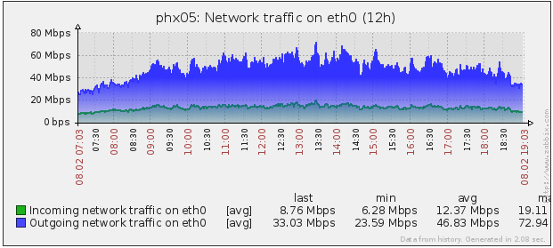

Overcast Network
Overcast Network
Overcast Network is a network of Minecraft multiplayer servers providing fast-paced player versus player gameplay.
Official Website
Gameplay
Overcast Network features match-based gameplay. Players are divided into two or more teams and tasked to complete a certain objective. Watch the video below for a brief trailer on what game play usually looks like. Note that Overcast is comprised of software that runs behind the scenes on our servers. All visuals are property of Mojang, the company behind Minecraft.
Video created by community member FunnyQuinn.
Each match features a custom terrain built by players from all over the world. Players can use whatever resources that are available to them in order to achieve their objective. The primary objectives are as follows:
Destroy the Core
Players must storm to the enemy team's side and leak lava from a heavily fortified core.
Capture the Wool
Colored wool blocks are placed before the match in specific rooms. Players must infultrate these rooms to gather the blocks then return to their side to place them in the monument and win.
Break the Monument
Players must destroy certain objects placed throughout the maps. Sometimes they can be damaged easily and sometimes they are much more difficult to mine. Defenders try to stop the attackers in their tracks to ensure their monument stays intact.
Team Death Match
Two teams duel it out in a player versus player match. The winning team is the one with the most amount of points at the end. Teams may gain points by killing enemy team members or scoring in preplaced goals.
Capture the Hill
Many hills are placed throughout the map. Controlled these hills gives a team points every second. The first team to the predetermined point limit is the winner.
Plugin Technology
Most of the Overcast Network custom software is written as a server-side modifications to the Minecraft server software. We use the open source project Bukkit to dynamically load our modifications. Being server side means that players can connect to our server and immediately experience a different style of multiplayer gameplay.
There are a few core plugins that provide most of the experience:
PGM (closed source)
PGM stands for "Player versus player Game Manager" and is the core software that loads the maps, runs the game, and enforces the rules. The plugin reads maps (composed of the Minecraft world files plus an XML description document) and determines what rules need to be enforced. Players are automatically allowed to spectate a game when they join and may choose to join one of the participating teams.
Project Ares (closed source)
Project Ares is our plugin which manages the interaction between our Minecraft servers and the backend database. The database stores all sorts of information including game statistics, bans, website information, and many other miscellaneous pieces of information. This plugin watches what is happening on the server and saves appropriate data to the database.
Supporting Plugins
There are many more plugins that we use to provide other, smaller features. Here is a short list of our open source ones (more can be found on our Github page):
SportBukkit
Custom modifications to the Bukkit software that enables extra features.
BukkitSettings
Framework that enables players to customize their experience through in game settings.
Tracker
Plugin that provides advance tracking of player damage and gives appropriate credit to players who score a kill.
Server Technology
The Overcast Network currently rents 14 dedicated servers around the world. United States servers are hosted on 8 machines in Phoenix, AZ. Europe servers are hosted on 3 machines in Amsterdam, NL. Tournament servers are hosted on 3 machines in Chicago, IL. One of the most significant challenges is managing and monitoring all the services we run.
Load Balancing
The Overcast Network is designed to support an incredibly large number of concurrent players. We utilize the BungeeCore load balancer to allow players to switch between Minecraft server instances without having to disconnect. This allows for seamless playing and other features are included to allow for players to easily play with their friends.
Server Configuration
All machines are managed by Puppet configuration management. Puppet takes care of ensuring the correct software is installed on all the servers are is running and configured properly. It also takes care of managing security and ensuring our servers are protected from external attacks.
Minecraft servers are also managed by Puppet but in a slightly different way. We have code which reads data from the database for every Minecraft instance we run and uses that data to configure it properly. Every instance automatically restarts many times a day and is updated to the latest software at the same time.
Server Monitoring
All servers are monitored using server monitoring software to show in real time statistics including CPU load, memory usage, disk usage, and network utilization. We actively check this monitoring to ensure the servers are running at peak performance 24/7/365. Services are balanced between server machines to prevent a single machine from getting overloaded and causing a reduced experience for our players.
Statistics
Almost 1 million unique players
Average of 100 thousand unique players per week
Further Browsing
Here are two more trailers that showcase what it is like to play on the Overcast Network servers:
Video created by community member thegoodguy.
Video created by community member CacklingPanda.